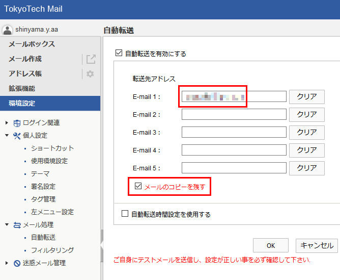

(ヘッダ) Date: 2021年4月16日 09:10:12 From: 大田区立図書館 To: 新山 祐介 Subject: 大田区立図書館からのお知らせ(本文) 新山祐介様 ご予約の図書が用意できましたので、 下記の図書館までおいでください。 大田区立大田図書館 電話番号03-3758-3051 なお貸出上限は、貸出中資料を含めて図書12冊、AV6点です。 休館日にご注意ください。- ヘッダに書いてあるもの:
- 差出人のメールアドレス (
From)- 宛て先のメールアドレス (
To)- 送信日時 (
Date)- メールの題名 (
Subject)- ...
2.3. メールアドレスの書き方・読み方
FromおよびToヘッダに書く。- 空白は入れない。
- 一文字でも間違えたら、届かない。
- アドレスおよび
@はすべて半角で。
shinyama.y.aa @ m.titech.ac.jp ユーザ名 アット サーバ名
(ドメイン名)演習 3-4. 間違いを探せ!以下のメールアドレスで、間違っている部分はどこか。
- shinyama.y.aa@m.titech.ac.pj
- shinyama.y.aa@m.titech,ac.jp
- shinyama.y.aa@m.t¡tech.ac.jp
- shinyama.y.aa@m．titech.ac.jp
- shinyama.y.aa@M.TITECH.AC.JP
- shinyama.y.aa＠m.titech.ac.jp
2.4. 送れないとき
メールが送れない場合、自分から相手までのネットワークのどこかに原因がある。 (が、どこか正確にわからないことも多い)
- 自分側のサーバの電源が切れていたら?
- インターネットの接続が切れていたら?
- 相手のサーバ名が間違っていたら?
- 相手側のサーバの電源が切れていたら?
- 相手のユーザ名が間違っていたら?
- サーバのディスクが一杯だったら?
- 相手がメールをチェックしなかったら?
メールが送れなかったとき、 「送れませんでした」という通知が自分宛のメールに来る。
演習 3-5. 電子メールのふるまい
- メールの差出人はなぜ書く必要があるか?
aaa@nonexistent.comに送ったら、どの時点でエラーが発生するか?nonexistnet@titech.ac.jpではどうか?- 大学サーバが停電している場合、メールは届くか?
- インターネット全体が停電している場合はどうか?
- 相手先サーバが停電している場合、メールは届くか?
- 3日間、メールが届かない場合、それは永久に届かないか? 10日ではどうか?
- 大学の合格通知をメールで出すのに問題はあるか?
- 電子メールはつねに郵便よりも早く届くか?
2.5. 電子メールの危険性
- “ベストエフォート方式” → 「精一杯やったから許して」
- 中継している = 中継者は盗み見れる。暗号化もされていない。
- 受信用サーバが改竄される危険性がある。
- 届かない場合もある。
- 偽物の可能性もある。
雑談・チャット等における「顔文字」文化の違い
- 絵文字 (Emoji): ☺, 😆, 😭
- 顔文字 (日本):
(^^;),(＾▽＾),(≧∇≦),（ ´Д｀）,orz- Emoticon, Smiley (欧米):
:-),:D,XD,D:- 現在、Twitterで使われている絵文字一覧
3. メールアプリの設定
とりあえず、今のところは 東工大ポータルにログインして Tokyo Tech Mail を開けば メールの読み書きができる。 しかし、いちいちポータルにログインするのは面倒くさい。 専用のメールアプリを使うと、ログインしなくてもメールの読み書きができる。
大学の演習室では「Thunderbird」というアプリを使う。 これは Windows、Mac のどちらにも対応している。
自宅のパソコンで Thunderbird を使う方法
- まず 共通メール認証ID を発行し、メモしておく。
- Thunderbird アプリをインストールする。

- Thunderbird 設定ガイド に従って、設定しませう。
3.1. メール転送の設定
別の方法として、 もし別のメールアドレス (Gmailなど) をすでに持っている場合、 大学のアドレス宛てに来たメールをさらにそのアドレスに転送 (実際にはコピー) することもできる。 こうすると大学のメールは従来のアプリで受けとれるので、 新しくメールアプリを設定する必要はない。
注意: メールの転送をおこなう場合、 2つの受信用サーバが完璧に動く必要がある。 さもないと、最悪の場合、届いたメールが失われる危険がある。
- ポータルにログインし、Tokyo Tech Mail を開く。
- 画面左下の「
環境設定」をクリックする。- 以下のように転送先のアドレスを入力する:
上の画面で「メールのコピーを残す」にチェックを入れることをおすすめする。 さもないと、転送がうまく動かない場合、届いたメールが失われてしまう。4. 本日のまとめ
- ネットワークの基本的なしくみを学習した。
- 電子メールの原理を学習した。
- メールは届かない場合もあるし、偽物の可能性もある。
メールアプリを使えるように設定した。あるいは、メール転送を設定した。- おまけ: なぜ迷惑メールは「スパム」と呼ばれるのか?
小課題2. 電子メール送信の練習 (5月2日締切)
- 締め切り: 5月2日 (1週間後)
- 次のアドレスに大学のアドレス (...
@m.titech.ac.jp) からメールを送れ:@shinyama.jp
- メールの題名 (件名) は以下のようにすること:
小課題2- 本文に以下のものを書くこと:
- 学籍番号
- 氏名
- なぜ鏡は左右逆に写るのに上下逆ではないのか、自分なりに考えた回答。
- 正しく送れた人は、3日以内に必ず新山が返事を出します。
- 注意: 新山から「回答を受け取りました」というメールが来ない人は、 まだ提出したことになっていません。
クラス共通課題は、全クラス共通の (やや大変な?) 課題です。
クラス共通課題1. 電子メールの仕組み (5月2日締切)
- 締め切り: 5月2日 (1週間後)
- 以下のページを開く: (今までとやり方が違うので注意)
注意: 「授業時に伝えられた鍵を入力しなさい」という欄に正しい文字を入力しないと先へ進めません。 鍵は授業中および Discord 上でアナウンスします。
- クラス共通課題1「メール」
- ヒント: 用語がわからない場合は、 クラス共通資料にある 「自習用副教材1」「自習用副教材2」を見ましょう。
来週の予定
附属図書館スタッフの方が直接 Zoom 授業をおこないます。
- 「図書館のシステムの使い方」
(注意: この回だけは Zoom リンクが異なります。 リンクは後日メールで送信・Discordでアナウンスします。)
Yusuke Shinyama
{kind=link}
{kind=link}
{kind=link}